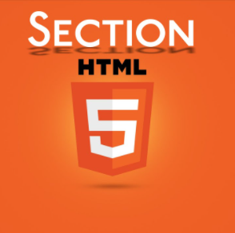

SECTION:
El elemento de HTML section representa una sección genérica de un documento. Sirve para determinar qué contenido corresponde a qué parte de un esquema. Piensa en el esquema como en el índice de contenido de un libro; un tema común y subsecciones relacionadas. Es, por lo tanto, una etiquéta semántica. Su funcionalidad principal es estructurar semánticamente un documento a la hora de ser representado por parte de un agente usuario. Por ejemplo, un agente de usuario que represente el documento en voz, podría exponer al usuario el índice de contenido por niveles para navegar rápidamente por las distintas partes.
La etiqueta section está pensada para agrupar los apartados del contenido principal del documento. Normalmente, las secciones (section) empiezan con un título (h1, h2, etc.) que hace referencia al tema tratado en la sección.
|

|